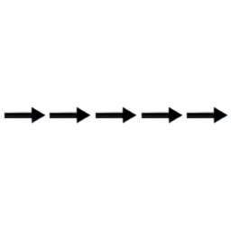
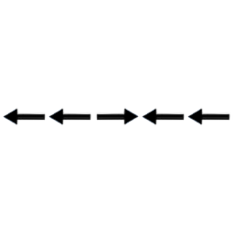
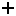
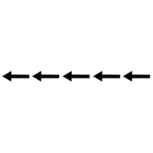
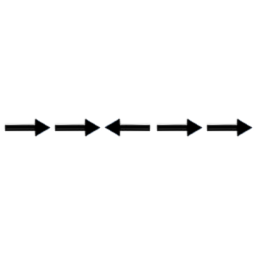

You will be shown a series of arrows on the screen, pointing to the left or to the right. For example:

or

Press the RIGHT button if the CENTER arrow points to the right.
Press the LEFT button if the CENTER arrow points to the left.
Try to respond as quickly and accurately as you can.
Try to keep your attention focused on the cross ("+") at the center of the screen.
First we'll do a practice trial.


